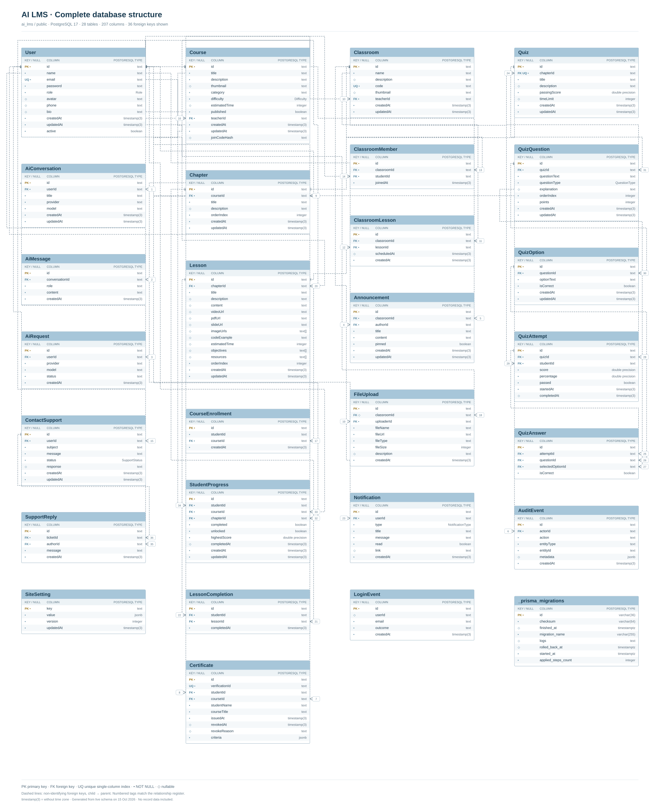

AI LMS — โครงสร้างฐานข้อมูล
28 ตาราง · 207 คอลัมน์ · 36 Foreign Keys · 5 enum types
ดึงจากฐานข้อมูล ai_lms.public บนเครื่อง วันที่ 15 ตุลาคม 2026 แผนภาพนี้สร้างจาก metadata จริง ไม่ใช่ภาพแคป DBeaver และไม่มีข้อมูลระเบียนผู้ใช้
ตารางแอป 27 ตาราง และตารางระบบ _prisma_migrations 1 ตาราง เส้นแสดงเฉพาะ Foreign Key ที่มีจริงในฐานข้อมูล: คอลัมน์ที่ชื่อคล้ายกันแต่ไม่มี FK จะไม่เพิ่มเส้นสมมติ
เปิดภาพรวมแบบเวกเตอร์ / ซูม · ภาพรวม PNG · โครงสร้าง SQL · Metadata JSON

ภาพแยกหมวด
Learning & progress — SVG · PNG
เส้นเชื่อมในภาพย่อยแสดงเฉพาะตารางที่อยู่ในภาพเดียวกัน ดูความสัมพันธ์ข้ามหมวดได้ในภาพรวมและทะเบียน FK
Classroom & communication — SVG · PNG
เส้นเชื่อมในภาพย่อยแสดงเฉพาะตารางที่อยู่ในภาพเดียวกัน ดูความสัมพันธ์ข้ามหมวดได้ในภาพรวมและทะเบียน FK
Assessment — SVG · PNG
เส้นเชื่อมในภาพย่อยแสดงเฉพาะตารางที่อยู่ในภาพเดียวกัน ดูความสัมพันธ์ข้ามหมวดได้ในภาพรวมและทะเบียน FK
Users, AI & support — SVG · PNG
เส้นเชื่อมในภาพย่อยแสดงเฉพาะตารางที่อยู่ในภาพเดียวกัน ดูความสัมพันธ์ข้ามหมวดได้ในภาพรวมและทะเบียน FK
System tables — SVG · PNG
เส้นเชื่อมในภาพย่อยแสดงเฉพาะตารางที่อยู่ในภาพเดียวกัน ดูความสัมพันธ์ข้ามหมวดได้ในภาพรวมและทะเบียน FK
สารบัญตาราง
ทะเบียนความสัมพันธ์ — 36 Foreign Keys
หมายเลขตรงกับป้ายเส้นในแผนภาพ ลูกศรอ่านจากตารางลูกไปตารางแม่ ความสัมพันธ์ทั้งหมดเป็น non-identifying เพราะ FK ไม่เป็นส่วนหนึ่งของ Primary Key ของตารางลูก ฝั่งลูกอ้างอิงแม่ได้ 1 รายการเมื่อ NOT NULL หรือ 0..1 เมื่อ nullable; จำนวนลูกต่อแม่ขึ้นกับ UNIQUE index ที่แสดงในพจนานุกรมตาราง
| No. | Child column | Parent column | Delete / Update |
|---|
| 1 | AiConversation.userId | User.id | ON UPDATE CASCADE ON DELETE CASCADE |
| 2 | AiMessage.conversationId | AiConversation.id | ON UPDATE CASCADE ON DELETE CASCADE |
| 3 | AiRequest.userId | User.id | ON UPDATE CASCADE ON DELETE CASCADE |
| 4 | Announcement.authorId | User.id | ON UPDATE CASCADE ON DELETE RESTRICT |
| 5 | Announcement.classroomId | Classroom.id | ON UPDATE CASCADE ON DELETE CASCADE |
| 6 | AuditEvent.actorId | User.id | ON UPDATE CASCADE ON DELETE RESTRICT |
| 7 | Certificate.courseId | Course.id | ON UPDATE CASCADE ON DELETE RESTRICT |
| 8 | Certificate.studentId | User.id | ON UPDATE CASCADE ON DELETE RESTRICT |
| 9 | Chapter.courseId | Course.id | ON UPDATE CASCADE ON DELETE CASCADE |
| 10 | Classroom.teacherId | User.id | ON UPDATE CASCADE ON DELETE RESTRICT |
| 11 | ClassroomLesson.classroomId | Classroom.id | ON UPDATE CASCADE ON DELETE CASCADE |
| 12 | ClassroomLesson.lessonId | Lesson.id | ON UPDATE CASCADE ON DELETE RESTRICT |
| 13 | ClassroomMember.classroomId | Classroom.id | ON UPDATE CASCADE ON DELETE CASCADE |
| 14 | ClassroomMember.studentId | User.id | ON UPDATE CASCADE ON DELETE RESTRICT |
| 15 | ContactSupport.userId | User.id | ON UPDATE CASCADE ON DELETE RESTRICT |
| 16 | Course.teacherId | User.id | ON UPDATE CASCADE ON DELETE RESTRICT |
| 17 | CourseEnrollment.courseId | Course.id | ON UPDATE CASCADE ON DELETE CASCADE |
| 18 | FileUpload.classroomId | Classroom.id | ON UPDATE CASCADE ON DELETE SET NULL |
| 19 | FileUpload.uploaderId | User.id | ON UPDATE CASCADE ON DELETE RESTRICT |
| 20 | Lesson.chapterId | Chapter.id | ON UPDATE CASCADE ON DELETE CASCADE |
| 21 | LessonCompletion.lessonId | Lesson.id | ON UPDATE CASCADE ON DELETE RESTRICT |
| 22 | LessonCompletion.studentId | User.id | ON UPDATE CASCADE ON DELETE RESTRICT |
| 23 | Notification.userId | User.id | ON UPDATE CASCADE ON DELETE RESTRICT |
| 24 | Quiz.chapterId | Chapter.id | ON UPDATE CASCADE ON DELETE CASCADE |
| 25 | QuizAnswer.attemptId | QuizAttempt.id | ON UPDATE CASCADE ON DELETE CASCADE |
| 26 | QuizAnswer.questionId | QuizQuestion.id | ON UPDATE CASCADE ON DELETE RESTRICT |
| 27 | QuizAnswer.selectedOptionId | QuizOption.id | ON UPDATE CASCADE ON DELETE RESTRICT |
| 28 | QuizAttempt.quizId | Quiz.id | ON UPDATE CASCADE ON DELETE RESTRICT |
| 29 | QuizAttempt.studentId | User.id | ON UPDATE CASCADE ON DELETE RESTRICT |
| 30 | QuizOption.questionId | QuizQuestion.id | ON UPDATE CASCADE ON DELETE CASCADE |
| 31 | QuizQuestion.quizId | Quiz.id | ON UPDATE CASCADE ON DELETE CASCADE |
| 32 | StudentProgress.chapterId | Chapter.id | ON UPDATE CASCADE ON DELETE RESTRICT |
| 33 | StudentProgress.courseId | Course.id | ON UPDATE CASCADE ON DELETE RESTRICT |
| 34 | StudentProgress.studentId | User.id | ON UPDATE CASCADE ON DELETE RESTRICT |
| 35 | SupportReply.authorId | User.id | ON UPDATE CASCADE ON DELETE RESTRICT |
| 36 | SupportReply.ticketId | ContactSupport.id | ON UPDATE CASCADE ON DELETE RESTRICT |
Enum types
Difficulty
BEGINNER · INTERMEDIATE · ADVANCED
NotificationType
NEW_LESSON · QUIZ_AVAILABLE · QUIZ_PASSED · QUIZ_FAILED · CHAPTER_UNLOCKED · ANNOUNCEMENT · GENERAL
QuestionType
MULTIPLE_CHOICE · TRUE_FALSE
Role
STUDENT · TEACHER · ADMIN
SupportStatus
OPEN · IN_PROGRESS · RESOLVED · CLOSED
AiConversation
| Key | Column | PostgreSQL type (exact) | Nullable | Default |
|---|
| PK | id | text | No | — |
| FK | userId | text | No | — |
| title | text | No | — |
| provider | text | No | — |
| model | text | No | — |
| createdAt | timestamp(3) without time zone | No | CURRENT_TIMESTAMP |
| updatedAt | timestamp(3) without time zone | No | — |
Indexes
CREATE UNIQUE INDEX "AiConversation_pkey" ON public."AiConversation" USING btree (id)
CREATE INDEX "AiConversation_userId_updatedAt_idx" ON public."AiConversation" USING btree ("userId", "updatedAt")Constraints
AiConversation_pkey
PRIMARY KEY (id)
AiConversation_userId_fkey
FOREIGN KEY ("userId") REFERENCES "User"(id) ON UPDATE CASCADE ON DELETE CASCADE
AiMessage
| Key | Column | PostgreSQL type (exact) | Nullable | Default |
|---|
| PK | id | text | No | — |
| FK | conversationId | text | No | — |
| role | text | No | — |
| content | text | No | — |
| createdAt | timestamp(3) without time zone | No | CURRENT_TIMESTAMP |
Indexes
CREATE INDEX "AiMessage_conversationId_createdAt_idx" ON public."AiMessage" USING btree ("conversationId", "createdAt")CREATE UNIQUE INDEX "AiMessage_pkey" ON public."AiMessage" USING btree (id)
Constraints
AiMessage_conversationId_fkey
FOREIGN KEY ("conversationId") REFERENCES "AiConversation"(id) ON UPDATE CASCADE ON DELETE CASCADE
AiMessage_pkey
PRIMARY KEY (id)
AiRequest
| Key | Column | PostgreSQL type (exact) | Nullable | Default |
|---|
| PK | id | text | No | — |
| FK | userId | text | No | — |
| provider | text | No | — |
| model | text | No | — |
| status | text | No | 'PENDING'::text |
| createdAt | timestamp(3) without time zone | No | CURRENT_TIMESTAMP |
Indexes
CREATE UNIQUE INDEX "AiRequest_pkey" ON public."AiRequest" USING btree (id)
CREATE INDEX "AiRequest_userId_createdAt_idx" ON public."AiRequest" USING btree ("userId", "createdAt")Constraints
AiRequest_pkey
PRIMARY KEY (id)
AiRequest_userId_fkey
FOREIGN KEY ("userId") REFERENCES "User"(id) ON UPDATE CASCADE ON DELETE CASCADE
Announcement
| Key | Column | PostgreSQL type (exact) | Nullable | Default |
|---|
| PK | id | text | No | — |
| FK | classroomId | text | No | — |
| FK | authorId | text | No | — |
| title | text | No | — |
| content | text | No | — |
| pinned | boolean | No | false |
| createdAt | timestamp(3) without time zone | No | CURRENT_TIMESTAMP |
| updatedAt | timestamp(3) without time zone | No | — |
Indexes
CREATE INDEX "Announcement_classroomId_idx" ON public."Announcement" USING btree ("classroomId")CREATE UNIQUE INDEX "Announcement_pkey" ON public."Announcement" USING btree (id)
Constraints
Announcement_authorId_fkey
FOREIGN KEY ("authorId") REFERENCES "User"(id) ON UPDATE CASCADE ON DELETE RESTRICT
Announcement_classroomId_fkey
FOREIGN KEY ("classroomId") REFERENCES "Classroom"(id) ON UPDATE CASCADE ON DELETE CASCADE
Announcement_pkey
PRIMARY KEY (id)
AuditEvent
| Key | Column | PostgreSQL type (exact) | Nullable | Default |
|---|
| PK | id | text | No | — |
| FK | actorId | text | No | — |
| action | text | No | — |
| entityType | text | No | — |
| entityId | text | No | — |
| metadata | jsonb | Yes | — |
| createdAt | timestamp(3) without time zone | No | CURRENT_TIMESTAMP |
Indexes
CREATE INDEX "AuditEvent_actorId_createdAt_idx" ON public."AuditEvent" USING btree ("actorId", "createdAt")CREATE INDEX "AuditEvent_entityType_entityId_createdAt_idx" ON public."AuditEvent" USING btree ("entityType", "entityId", "createdAt")CREATE UNIQUE INDEX "AuditEvent_pkey" ON public."AuditEvent" USING btree (id)
Constraints
AuditEvent_actorId_fkey
FOREIGN KEY ("actorId") REFERENCES "User"(id) ON UPDATE CASCADE ON DELETE RESTRICT
AuditEvent_pkey
PRIMARY KEY (id)
Certificate
| Key | Column | PostgreSQL type (exact) | Nullable | Default |
|---|
| PK | id | text | No | — |
| UQ | verificationId | text | No | — |
| FK | studentId | text | No | — |
| FK | courseId | text | No | — |
| studentName | text | No | — |
| courseTitle | text | No | — |
| issuedAt | timestamp(3) without time zone | No | CURRENT_TIMESTAMP |
| revokedAt | timestamp(3) without time zone | Yes | — |
| revokeReason | text | Yes | — |
| criteria | jsonb | No | — |
Indexes
CREATE UNIQUE INDEX "Certificate_pkey" ON public."Certificate" USING btree (id)
CREATE UNIQUE INDEX "Certificate_studentId_courseId_key" ON public."Certificate" USING btree ("studentId", "courseId")CREATE UNIQUE INDEX "Certificate_verificationId_key" ON public."Certificate" USING btree ("verificationId")Constraints
Certificate_courseId_fkey
FOREIGN KEY ("courseId") REFERENCES "Course"(id) ON UPDATE CASCADE ON DELETE RESTRICT
Certificate_pkey
PRIMARY KEY (id)
Certificate_studentId_fkey
FOREIGN KEY ("studentId") REFERENCES "User"(id) ON UPDATE CASCADE ON DELETE RESTRICT
Chapter
| Key | Column | PostgreSQL type (exact) | Nullable | Default |
|---|
| PK | id | text | No | — |
| FK | courseId | text | No | — |
| title | text | No | — |
| description | text | Yes | — |
| orderIndex | integer | No | — |
| createdAt | timestamp(3) without time zone | No | CURRENT_TIMESTAMP |
| updatedAt | timestamp(3) without time zone | No | — |
Indexes
CREATE INDEX "Chapter_courseId_idx" ON public."Chapter" USING btree ("courseId")CREATE UNIQUE INDEX "Chapter_pkey" ON public."Chapter" USING btree (id)
Constraints
Chapter_courseId_fkey
FOREIGN KEY ("courseId") REFERENCES "Course"(id) ON UPDATE CASCADE ON DELETE CASCADE
Chapter_pkey
PRIMARY KEY (id)
Classroom
| Key | Column | PostgreSQL type (exact) | Nullable | Default |
|---|
| PK | id | text | No | — |
| name | text | No | — |
| description | text | Yes | — |
| UQ | code | text | No | — |
| thumbnail | text | Yes | — |
| FK | teacherId | text | No | — |
| createdAt | timestamp(3) without time zone | No | CURRENT_TIMESTAMP |
| updatedAt | timestamp(3) without time zone | No | — |
Indexes
CREATE UNIQUE INDEX "Classroom_code_key" ON public."Classroom" USING btree (code)
CREATE UNIQUE INDEX "Classroom_pkey" ON public."Classroom" USING btree (id)
CREATE INDEX "Classroom_teacherId_idx" ON public."Classroom" USING btree ("teacherId")Constraints
Classroom_pkey
PRIMARY KEY (id)
Classroom_teacherId_fkey
FOREIGN KEY ("teacherId") REFERENCES "User"(id) ON UPDATE CASCADE ON DELETE RESTRICT
ClassroomLesson
| Key | Column | PostgreSQL type (exact) | Nullable | Default |
|---|
| PK | id | text | No | — |
| FK | classroomId | text | No | — |
| FK | lessonId | text | No | — |
| scheduledAt | timestamp(3) without time zone | Yes | — |
| createdAt | timestamp(3) without time zone | No | CURRENT_TIMESTAMP |
Indexes
CREATE UNIQUE INDEX "ClassroomLesson_classroomId_lessonId_key" ON public."ClassroomLesson" USING btree ("classroomId", "lessonId")CREATE UNIQUE INDEX "ClassroomLesson_pkey" ON public."ClassroomLesson" USING btree (id)
Constraints
ClassroomLesson_classroomId_fkey
FOREIGN KEY ("classroomId") REFERENCES "Classroom"(id) ON UPDATE CASCADE ON DELETE CASCADE
ClassroomLesson_lessonId_fkey
FOREIGN KEY ("lessonId") REFERENCES "Lesson"(id) ON UPDATE CASCADE ON DELETE RESTRICT
ClassroomLesson_pkey
PRIMARY KEY (id)
ClassroomMember
| Key | Column | PostgreSQL type (exact) | Nullable | Default |
|---|
| PK | id | text | No | — |
| FK | classroomId | text | No | — |
| FK | studentId | text | No | — |
| joinedAt | timestamp(3) without time zone | No | CURRENT_TIMESTAMP |
Indexes
CREATE UNIQUE INDEX "ClassroomMember_classroomId_studentId_key" ON public."ClassroomMember" USING btree ("classroomId", "studentId")CREATE UNIQUE INDEX "ClassroomMember_pkey" ON public."ClassroomMember" USING btree (id)
Constraints
ClassroomMember_classroomId_fkey
FOREIGN KEY ("classroomId") REFERENCES "Classroom"(id) ON UPDATE CASCADE ON DELETE CASCADE
ClassroomMember_pkey
PRIMARY KEY (id)
ClassroomMember_studentId_fkey
FOREIGN KEY ("studentId") REFERENCES "User"(id) ON UPDATE CASCADE ON DELETE RESTRICT
Course
| Key | Column | PostgreSQL type (exact) | Nullable | Default |
|---|
| PK | id | text | No | — |
| title | text | No | — |
| description | text | No | — |
| thumbnail | text | Yes | — |
| category | text | No | — |
| difficulty | "Difficulty" | No | — |
| estimatedTime | integer | Yes | — |
| published | boolean | No | false |
| FK | teacherId | text | No | — |
| createdAt | timestamp(3) without time zone | No | CURRENT_TIMESTAMP |
| updatedAt | timestamp(3) without time zone | No | — |
| joinCodeHash | text | Yes | — |
Indexes
CREATE UNIQUE INDEX "Course_pkey" ON public."Course" USING btree (id)
CREATE INDEX "Course_teacherId_idx" ON public."Course" USING btree ("teacherId")Constraints
Course_pkey
PRIMARY KEY (id)
Course_teacherId_fkey
FOREIGN KEY ("teacherId") REFERENCES "User"(id) ON UPDATE CASCADE ON DELETE RESTRICT
CourseEnrollment
| Key | Column | PostgreSQL type (exact) | Nullable | Default |
|---|
| PK | id | text | No | — |
| studentId | text | No | — |
| FK | courseId | text | No | — |
| createdAt | timestamp(3) without time zone | No | CURRENT_TIMESTAMP |
Indexes
CREATE UNIQUE INDEX "CourseEnrollment_pkey" ON public."CourseEnrollment" USING btree (id)
CREATE UNIQUE INDEX "CourseEnrollment_studentId_courseId_key" ON public."CourseEnrollment" USING btree ("studentId", "courseId")Constraints
CourseEnrollment_courseId_fkey
FOREIGN KEY ("courseId") REFERENCES "Course"(id) ON UPDATE CASCADE ON DELETE CASCADE
CourseEnrollment_pkey
PRIMARY KEY (id)
FileUpload
| Key | Column | PostgreSQL type (exact) | Nullable | Default |
|---|
| PK | id | text | No | — |
| FK | classroomId | text | Yes | — |
| FK | uploaderId | text | No | — |
| fileName | text | No | — |
| fileUrl | text | No | — |
| fileType | text | No | — |
| fileSize | integer | No | — |
| description | text | Yes | — |
| createdAt | timestamp(3) without time zone | No | CURRENT_TIMESTAMP |
Indexes
CREATE INDEX "FileUpload_classroomId_idx" ON public."FileUpload" USING btree ("classroomId")CREATE UNIQUE INDEX "FileUpload_pkey" ON public."FileUpload" USING btree (id)
CREATE INDEX "FileUpload_uploaderId_idx" ON public."FileUpload" USING btree ("uploaderId")Constraints
FileUpload_classroomId_fkey
FOREIGN KEY ("classroomId") REFERENCES "Classroom"(id) ON UPDATE CASCADE ON DELETE SET NULL
FileUpload_pkey
PRIMARY KEY (id)
FileUpload_uploaderId_fkey
FOREIGN KEY ("uploaderId") REFERENCES "User"(id) ON UPDATE CASCADE ON DELETE RESTRICT
Lesson
| Key | Column | PostgreSQL type (exact) | Nullable | Default |
|---|
| PK | id | text | No | — |
| FK | chapterId | text | No | — |
| title | text | No | — |
| description | text | Yes | — |
| content | text | Yes | — |
| videoUrl | text | Yes | — |
| pdfUrl | text | Yes | — |
| slideUrl | text | Yes | — |
| imageUrls | text[] | Yes | — |
| codeExample | text | Yes | — |
| estimatedTime | integer | Yes | — |
| objectives | text[] | Yes | — |
| resources | text[] | Yes | — |
| orderIndex | integer | No | — |
| createdAt | timestamp(3) without time zone | No | CURRENT_TIMESTAMP |
| updatedAt | timestamp(3) without time zone | No | — |
Indexes
CREATE INDEX "Lesson_chapterId_idx" ON public."Lesson" USING btree ("chapterId")CREATE UNIQUE INDEX "Lesson_pkey" ON public."Lesson" USING btree (id)
Constraints
Lesson_chapterId_fkey
FOREIGN KEY ("chapterId") REFERENCES "Chapter"(id) ON UPDATE CASCADE ON DELETE CASCADE
Lesson_pkey
PRIMARY KEY (id)
LessonCompletion
| Key | Column | PostgreSQL type (exact) | Nullable | Default |
|---|
| PK | id | text | No | — |
| FK | studentId | text | No | — |
| FK | lessonId | text | No | — |
| completedAt | timestamp(3) without time zone | No | CURRENT_TIMESTAMP |
Indexes
CREATE UNIQUE INDEX "LessonCompletion_pkey" ON public."LessonCompletion" USING btree (id)
CREATE UNIQUE INDEX "LessonCompletion_studentId_lessonId_key" ON public."LessonCompletion" USING btree ("studentId", "lessonId")Constraints
LessonCompletion_lessonId_fkey
FOREIGN KEY ("lessonId") REFERENCES "Lesson"(id) ON UPDATE CASCADE ON DELETE RESTRICT
LessonCompletion_pkey
PRIMARY KEY (id)
LessonCompletion_studentId_fkey
FOREIGN KEY ("studentId") REFERENCES "User"(id) ON UPDATE CASCADE ON DELETE RESTRICT
LoginEvent
| Key | Column | PostgreSQL type (exact) | Nullable | Default |
|---|
| PK | id | text | No | — |
| userId | text | Yes | — |
| email | text | No | — |
| outcome | text | No | — |
| createdAt | timestamp(3) without time zone | No | CURRENT_TIMESTAMP |
Indexes
CREATE INDEX "LoginEvent_createdAt_idx" ON public."LoginEvent" USING btree ("createdAt")CREATE INDEX "LoginEvent_email_createdAt_idx" ON public."LoginEvent" USING btree (email, "createdAt")
CREATE UNIQUE INDEX "LoginEvent_pkey" ON public."LoginEvent" USING btree (id)
Constraints
LoginEvent_pkey
PRIMARY KEY (id)
Notification
| Key | Column | PostgreSQL type (exact) | Nullable | Default |
|---|
| PK | id | text | No | — |
| FK | userId | text | No | — |
| type | "NotificationType" | No | — |
| title | text | No | — |
| message | text | No | — |
| read | boolean | No | false |
| link | text | Yes | — |
| createdAt | timestamp(3) without time zone | No | CURRENT_TIMESTAMP |
Indexes
CREATE UNIQUE INDEX "Notification_pkey" ON public."Notification" USING btree (id)
CREATE INDEX "Notification_userId_idx" ON public."Notification" USING btree ("userId")Constraints
Notification_pkey
PRIMARY KEY (id)
Notification_userId_fkey
FOREIGN KEY ("userId") REFERENCES "User"(id) ON UPDATE CASCADE ON DELETE RESTRICT
Quiz
| Key | Column | PostgreSQL type (exact) | Nullable | Default |
|---|
| PK | id | text | No | — |
| FK UQ | chapterId | text | No | — |
| title | text | No | — |
| description | text | Yes | — |
| passingScore | double precision | No | 50 |
| timeLimit | integer | Yes | — |
| createdAt | timestamp(3) without time zone | No | CURRENT_TIMESTAMP |
| updatedAt | timestamp(3) without time zone | No | — |
Indexes
CREATE UNIQUE INDEX "Quiz_chapterId_key" ON public."Quiz" USING btree ("chapterId")CREATE UNIQUE INDEX "Quiz_pkey" ON public."Quiz" USING btree (id)
Constraints
Quiz_chapterId_fkey
FOREIGN KEY ("chapterId") REFERENCES "Chapter"(id) ON UPDATE CASCADE ON DELETE CASCADE
Quiz_pkey
PRIMARY KEY (id)
QuizAnswer
| Key | Column | PostgreSQL type (exact) | Nullable | Default |
|---|
| PK | id | text | No | — |
| FK | attemptId | text | No | — |
| FK | questionId | text | No | — |
| FK | selectedOptionId | text | No | — |
| isCorrect | boolean | No | — |
Indexes
CREATE UNIQUE INDEX "QuizAnswer_pkey" ON public."QuizAnswer" USING btree (id)
Constraints
QuizAnswer_attemptId_fkey
FOREIGN KEY ("attemptId") REFERENCES "QuizAttempt"(id) ON UPDATE CASCADE ON DELETE CASCADE
QuizAnswer_pkey
PRIMARY KEY (id)
QuizAnswer_questionId_fkey
FOREIGN KEY ("questionId") REFERENCES "QuizQuestion"(id) ON UPDATE CASCADE ON DELETE RESTRICT
QuizAnswer_selectedOptionId_fkey
FOREIGN KEY ("selectedOptionId") REFERENCES "QuizOption"(id) ON UPDATE CASCADE ON DELETE RESTRICT
QuizAttempt
| Key | Column | PostgreSQL type (exact) | Nullable | Default |
|---|
| PK | id | text | No | — |
| FK | quizId | text | No | — |
| FK | studentId | text | No | — |
| score | double precision | No | — |
| percentage | double precision | No | — |
| passed | boolean | No | — |
| startedAt | timestamp(3) without time zone | No | CURRENT_TIMESTAMP |
| completedAt | timestamp(3) without time zone | Yes | — |
Indexes
CREATE UNIQUE INDEX "QuizAttempt_pkey" ON public."QuizAttempt" USING btree (id)
CREATE INDEX "QuizAttempt_quizId_idx" ON public."QuizAttempt" USING btree ("quizId")CREATE INDEX "QuizAttempt_studentId_idx" ON public."QuizAttempt" USING btree ("studentId")Constraints
QuizAttempt_pkey
PRIMARY KEY (id)
QuizAttempt_quizId_fkey
FOREIGN KEY ("quizId") REFERENCES "Quiz"(id) ON UPDATE CASCADE ON DELETE RESTRICT
QuizAttempt_studentId_fkey
FOREIGN KEY ("studentId") REFERENCES "User"(id) ON UPDATE CASCADE ON DELETE RESTRICT
QuizOption
| Key | Column | PostgreSQL type (exact) | Nullable | Default |
|---|
| PK | id | text | No | — |
| FK | questionId | text | No | — |
| optionText | text | No | — |
| isCorrect | boolean | No | false |
| createdAt | timestamp(3) without time zone | No | CURRENT_TIMESTAMP |
| updatedAt | timestamp(3) without time zone | No | — |
Indexes
CREATE UNIQUE INDEX "QuizOption_pkey" ON public."QuizOption" USING btree (id)
CREATE INDEX "QuizOption_questionId_idx" ON public."QuizOption" USING btree ("questionId")Constraints
QuizOption_pkey
PRIMARY KEY (id)
QuizOption_questionId_fkey
FOREIGN KEY ("questionId") REFERENCES "QuizQuestion"(id) ON UPDATE CASCADE ON DELETE CASCADE
QuizQuestion
| Key | Column | PostgreSQL type (exact) | Nullable | Default |
|---|
| PK | id | text | No | — |
| FK | quizId | text | No | — |
| questionText | text | No | — |
| questionType | "QuestionType" | No | — |
| explanation | text | Yes | — |
| orderIndex | integer | No | — |
| points | integer | No | 1 |
| createdAt | timestamp(3) without time zone | No | CURRENT_TIMESTAMP |
| updatedAt | timestamp(3) without time zone | No | — |
Indexes
CREATE UNIQUE INDEX "QuizQuestion_pkey" ON public."QuizQuestion" USING btree (id)
CREATE INDEX "QuizQuestion_quizId_idx" ON public."QuizQuestion" USING btree ("quizId")Constraints
QuizQuestion_pkey
PRIMARY KEY (id)
QuizQuestion_quizId_fkey
FOREIGN KEY ("quizId") REFERENCES "Quiz"(id) ON UPDATE CASCADE ON DELETE CASCADE
SiteSetting
| Key | Column | PostgreSQL type (exact) | Nullable | Default |
|---|
| PK | key | text | No | — |
| value | jsonb | No | — |
| version | integer | No | 1 |
| updatedAt | timestamp(3) without time zone | No | — |
Indexes
CREATE UNIQUE INDEX "SiteSetting_pkey" ON public."SiteSetting" USING btree (key)
Constraints
SiteSetting_pkey
PRIMARY KEY (key)
StudentProgress
| Key | Column | PostgreSQL type (exact) | Nullable | Default |
|---|
| PK | id | text | No | — |
| FK | studentId | text | No | — |
| FK | courseId | text | No | — |
| FK | chapterId | text | No | — |
| completed | boolean | No | false |
| unlocked | boolean | No | false |
| highestScore | double precision | No | 0 |
| completedAt | timestamp(3) without time zone | Yes | — |
| createdAt | timestamp(3) without time zone | No | CURRENT_TIMESTAMP |
| updatedAt | timestamp(3) without time zone | No | — |
Indexes
CREATE INDEX "StudentProgress_courseId_idx" ON public."StudentProgress" USING btree ("courseId")CREATE UNIQUE INDEX "StudentProgress_pkey" ON public."StudentProgress" USING btree (id)
CREATE UNIQUE INDEX "StudentProgress_studentId_courseId_chapterId_key" ON public."StudentProgress" USING btree ("studentId", "courseId", "chapterId")CREATE INDEX "StudentProgress_studentId_idx" ON public."StudentProgress" USING btree ("studentId")Constraints
StudentProgress_chapterId_fkey
FOREIGN KEY ("chapterId") REFERENCES "Chapter"(id) ON UPDATE CASCADE ON DELETE RESTRICT
StudentProgress_courseId_fkey
FOREIGN KEY ("courseId") REFERENCES "Course"(id) ON UPDATE CASCADE ON DELETE RESTRICT
StudentProgress_pkey
PRIMARY KEY (id)
StudentProgress_studentId_fkey
FOREIGN KEY ("studentId") REFERENCES "User"(id) ON UPDATE CASCADE ON DELETE RESTRICT
SupportReply
| Key | Column | PostgreSQL type (exact) | Nullable | Default |
|---|
| PK | id | text | No | — |
| FK | ticketId | text | No | — |
| FK | authorId | text | No | — |
| message | text | No | — |
| createdAt | timestamp(3) without time zone | No | CURRENT_TIMESTAMP |
Indexes
CREATE UNIQUE INDEX "SupportReply_pkey" ON public."SupportReply" USING btree (id)
CREATE INDEX "SupportReply_ticketId_createdAt_idx" ON public."SupportReply" USING btree ("ticketId", "createdAt")Constraints
SupportReply_authorId_fkey
FOREIGN KEY ("authorId") REFERENCES "User"(id) ON UPDATE CASCADE ON DELETE RESTRICT
SupportReply_pkey
PRIMARY KEY (id)
SupportReply_ticketId_fkey
FOREIGN KEY ("ticketId") REFERENCES "ContactSupport"(id) ON UPDATE CASCADE ON DELETE RESTRICT
User
| Key | Column | PostgreSQL type (exact) | Nullable | Default |
|---|
| PK | id | text | No | — |
| name | text | No | — |
| UQ | email | text | No | — |
| password | text | No | — |
| role | "Role" | No | — |
| avatar | text | Yes | — |
| phone | text | Yes | — |
| bio | text | Yes | — |
| createdAt | timestamp(3) without time zone | No | CURRENT_TIMESTAMP |
| updatedAt | timestamp(3) without time zone | No | — |
| active | boolean | No | true |
Indexes
CREATE UNIQUE INDEX "User_email_key" ON public."User" USING btree (email)
CREATE UNIQUE INDEX "User_pkey" ON public."User" USING btree (id)
Constraints
User_pkey
PRIMARY KEY (id)
_prisma_migrations
| Key | Column | PostgreSQL type (exact) | Nullable | Default |
|---|
| PK | id | character varying(36) | No | — |
| checksum | character varying(64) | No | — |
| finished_at | timestamp with time zone | Yes | — |
| migration_name | character varying(255) | No | — |
| logs | text | Yes | — |
| rolled_back_at | timestamp with time zone | Yes | — |
| started_at | timestamp with time zone | No | now() |
| applied_steps_count | integer | No | 0 |
Indexes
CREATE UNIQUE INDEX _prisma_migrations_pkey ON public._prisma_migrations USING btree (id)
Constraints
_prisma_migrations_pkey
PRIMARY KEY (id)
ครบ 28 ตาราง / 207 คอลัมน์ / 36 FK ตรวจเทียบกับ metadata แล้ว ชนิดข้อมูลในภาพย่อ timestamp เพื่อให้อ่านง่าย; ตารางรายละเอียดแสดงชนิดเต็มตาม PostgreSQL